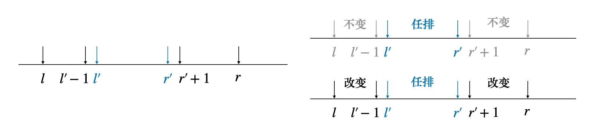

Educational Codeforces Round 120
D
D. Shuffle
题目大意，给定一个 01 串，要求找到恰好包含 k 个 1 的连续子串，然后任意打乱子串顺序
一次操作之后，可以得到多少个不同的串？
对于区间 [l,r] 任排，考虑能够得到多少个 01 串，记区间中 1 的个数为 c1，很明显答案是 (c1r−l+1)
如果枚举每一个位置 [l,r] 都这样算的话，很明显有重复计算，假设 [l′,r′]⊂[l,r]
那么对 [l′,r′] 统计任排方案的时候，在计算 [l,r] 的时候又被统计了一遍

实际上，考虑如何计算 [l,r] 区间的排列方案数，假设区间 [l,r] 中有 c1 个 1，考虑其子区间 [l′,r′]
S([l,r] 方案数)=S([l′,r′] 任排，[l,l′−1]∪[r′+1,r] 不变)+S([l′,r′] 任排，[l,l′−1]∪[r′+1,r] 改变)
注意到，S([l′,r′] 任排，[l,l′−1]∪[r′+1,r] 不变) 的方案数，实际上是
(c1′r′−l′+1)，c1′ 为 [l′,r′] 区间中 1 的个数
难点在于如何计算 [l,l′−1]∪[r′+1,r] 一定发生改变的方案数？
不妨令 pl′<l′, pr′>r′，可以考虑如下做法
枚举区间 [l′,r′] 外侧发生改变的位置，即枚举 [pl′,pr′]，其中 pl′ 是左边最外侧发生改变的位置
即 pl′−1→l 都不变，pl′ 一定改变，pr′ 同理，将枚举计算出的答案加起来就可以了
这样的结构，可以考虑用递推，枚举发生改变的位置 pl′,pr′，然后递推到更大的区间
具体来说，每一次枚举发生改变的区间 [l,r]，其中 l,r 端点一定是会发生改变的，[l+1,r−1] 子区间任排
算法实现
枚举 l，对于每个 l，先令 [l,r]←[l,l+1]（一开始令区间长度最小）
然后递推计算 ([l,r]→[l,r+1]→[l,r+2]⋯[l,n])，这样对于每一个 l
我们都枚举了每个可能发生改变的右端点，将答案加起来，就得到了 l 的贡献
把每一个 l 的贡献加起来，就是总贡献
计算 [l,r] 对答案的贡献也很简单，对于 [l,r] 区间，l,r 位置的值一定和原串不同
这样我们就知道了 [l+1,r−1] 子区间有多少个 1，假设为 c1，那么这个区间的贡献就是 (c1r−l−1)
最后不要忘了把答案 +1，即对原串不做任何修改的方案
计数问题杂题
 微信
微信 支付宝
支付宝